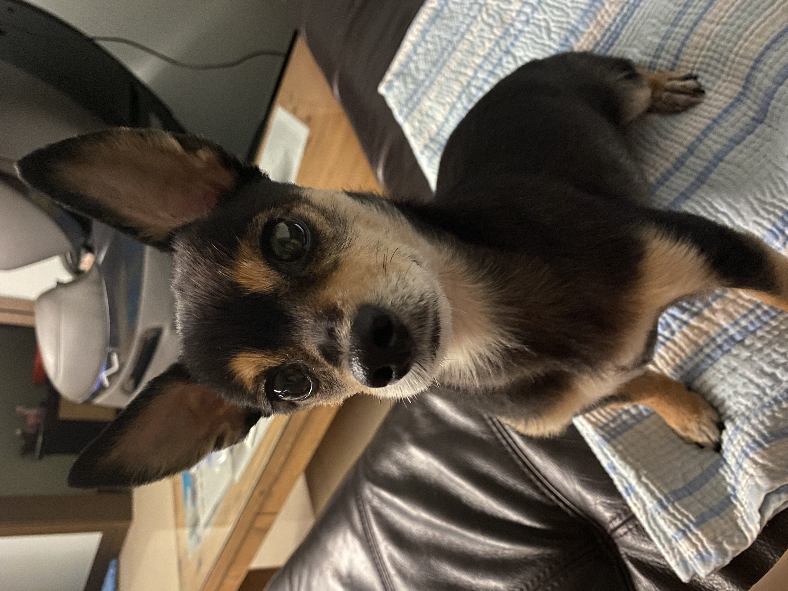

The Miniature Pinscher, also known as the Zwergpinscher, and Min Pin, is a small breed of dog of the pinscher type originating from Germany. The breed's earliest ancestors may have included the German Pinscher mixed with Italian greyhounds and dachshunds.[1][2]
Historical artifacts and paintings place the Min Pin as a very old breed, but factual documentation began less than 200 years ago, leaving its actual origins to debate. Many historians and those who have researched the background of the breed agree that this heritage is most likely correct, adding the shorthaired German Pinscher to the family tree. The international kennel club, the Fédération Cynologique Internationale, lists the Miniature Pinscher in Group 2, Section 1.1 Pinscher, along with the Dobermann, the German Pinscher, the Austrian Pinscher, and the other Toy Pinscher, the Affenpinscher.[3] Other kennel clubs list the Miniature Pinscher in the Toy Group or Companion Group.